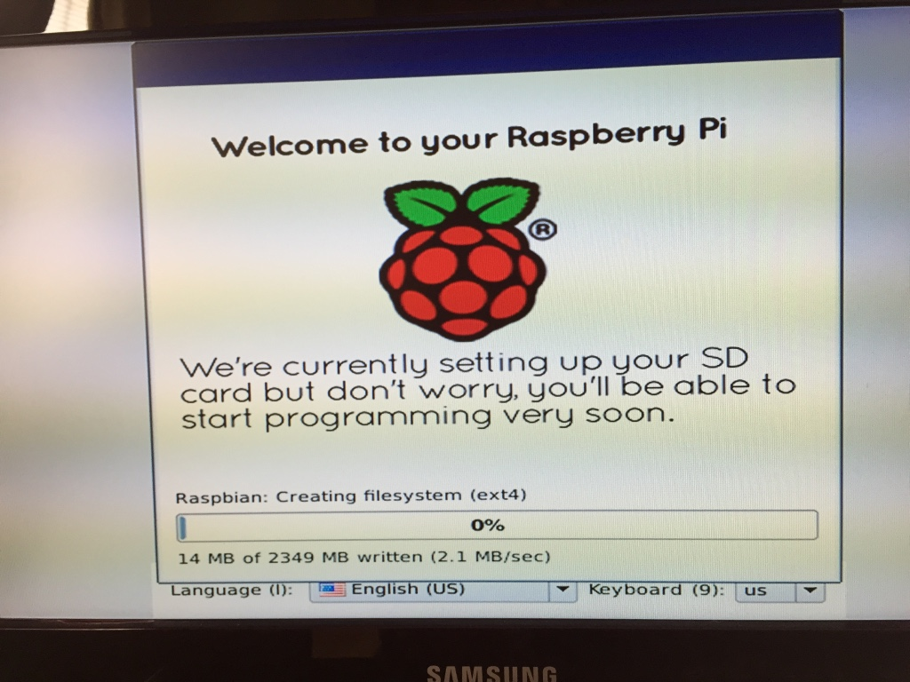
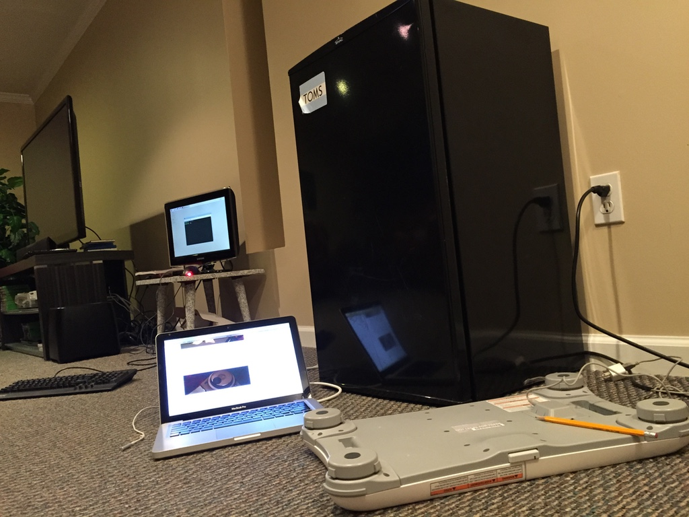
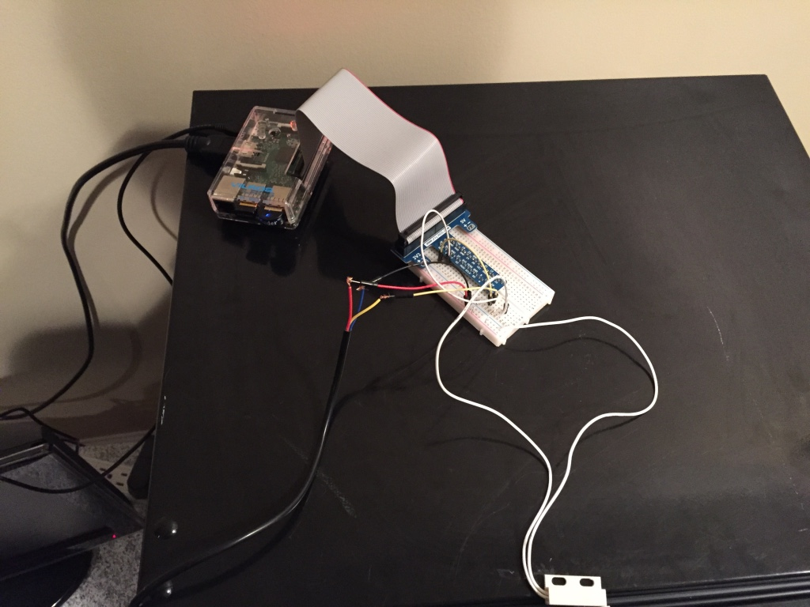
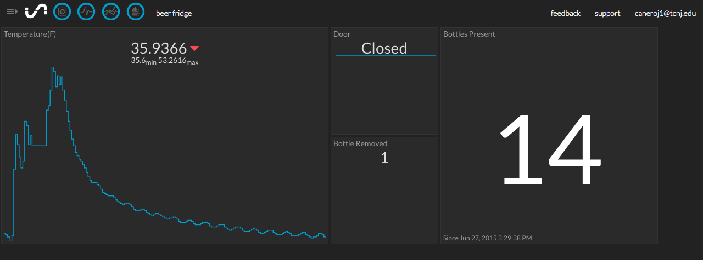

+
Beer Fridge of Awesomeness
The "Beer Fridge of Awesomeness" is a cool project I found on Github that walks you through using a Raspberry Pi to build your very own smart beer fridge! The Beer Fridge can detect when it's open, measure its temperature and count the number of bottles inside.
First Things First
I've never used a Raspberry Pi, so first I had to get my Ultimate Starter Kit. The project has a pretty long list of required parts, so I had to order those as well.
The Pi is Almost Done
Installing Raspbian, the default Raspberry Pi OS was pretty simple. There's a tool called NOOBS, seriously, that pretty much does it for you.
Next Steps
The Raspberry Pi needed some way to count the number of bottles in the fridge, so I had to connect the Raspberry Pi, via bluetooth, to a Wii Fit Balance Board and place the fridge on top. Then I was able to measure the weight of the fridge.
The next step was to start wiring everything up. Some of the parts necessary for the beer fridge to be totally awesome include a temperature sensor and a door sensor. Getting these working with the Raspberry Pi was the most difficult part of the project, and required a steady hand. Below is the fully wired Pi.
Finishing Up
All the sensors were working at this point, so it was time to fill the fridge! As I mentioned before, you should fill the fridge with beverages that all weigh pretty much the same. After loading up on Summer Shandy, I weighed the fridge with the bottles inside in order to determine each bottle's weight.
Project Complete!
Finally, the tutorial sets you up on a neat visualization dashboard where you can see the status of your beer fridge and monitor things like temperature and the number of bottles inside.
Closing Remarks
In the end, I thought the Beer Fridge of Awesomeness was a nice project to help me kill some time. It was my first exposure to working with a Raspberry Pi, and I learned a fair amount about setting up circuits and other hardware. I'm on the lookout for my next project!